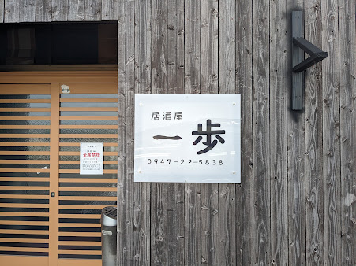

グルメ居酒屋一歩｜旬の鮮魚と刺身盛りが自慢！宴会にも最適な人気居酒屋
店主が目利きした新鮮な魚介と美味しい料理が楽しめる居酒屋。アットホームな雰囲気で、個室や団体宴会にも幅広く対応！
📍 田川郡福智町赤池510-112 | 🕒 17:00〜23:00（L.O. 22:30）
詳細を見る
地元で愛されるグルメやおすすめスポットなど、田川の魅力を発信中！

グルメ店主が目利きした新鮮な魚介と美味しい料理が楽しめる居酒屋。アットホームな雰囲気で、個室や団体宴会にも幅広く対応！
📍 田川郡福智町赤池510-112 | 🕒 17:00〜23:00（L.O. 22:30）
詳細を見る